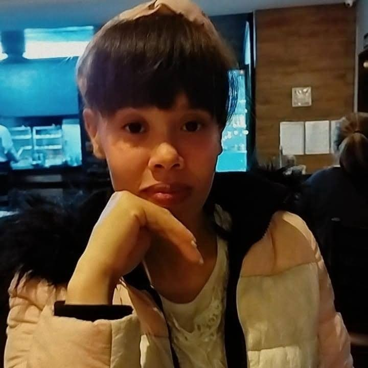

Djemilly Estevão | WDD 130.

Me chamo Djemilly, Servi uma missão no ano de 2018 a 2020, na missão Brasil Belém, tenho 27 anos, atualmente trabalho em logística, fiz faculdade de designer gráfico na modalidade em EAD e agora faço na BYU Pathway Desenvolvimento de software.
Gosto de escutar musica, assistir filmes,series,anime (principalmente dorama),hobbies,faço amigurumi, amo servir e estar na igreja.